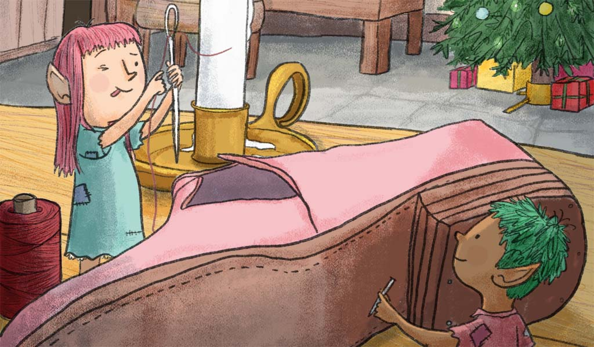
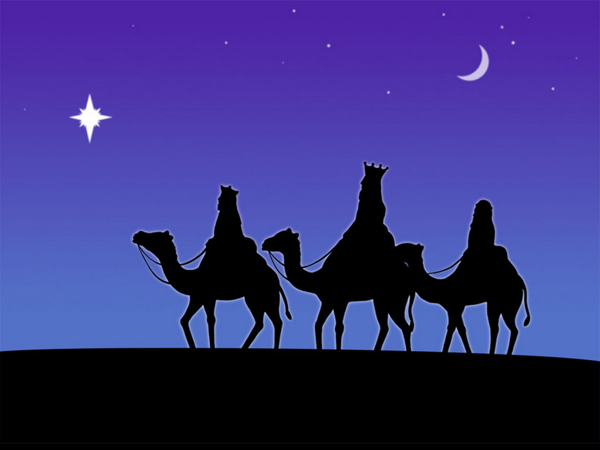

Stories have been always a part of the journey and the process of learning of human life. It is a way of passing of traditons, lessons, and culture from generations to another. This upcoming holiday is th perfect time for families to gather around the fire, and tell or share stories that they have know throughout the years.
The Shoemaker and the Elves
A shoemaker, by no fault of his own, had become so poor that at last he had nothing left but leather for one pair of shoes. So in the evening, he cut out the shoes which he wished to begin to make the next morning, and as he had a good conscience, he lay down quietly in his bed, commended himself to God, and fell asleep. In the morning, after he had said his prayers, and was just going to sit down to work, the two shoes stood quite finished on his table. He was astounded, and knew not what to say to it. He took the shoes in his hands to observe them closer, and they were so neatly made that there was not one bad stitch in them, just as if they were intended as a masterpiece.
Soon after, a buyer came in, and as the shoes pleased him so well, he paid more for them than was customary, and, with the money, the shoemaker was able to purchase leather for two pairs of shoes. He cut them out at night, and next morning was about to set to work with fresh courage; but he had no need to do so, for, when he got up, they were already made, and buyers also were not wanting, who gave him money enough to buy leather for four pairs of shoes. The following morning, too, he found the four pairs made; and so it went on constantly, what he cut out in the evening was finished by the morning, so that he soon had his honest independence again, and at last became a wealthy man. Now it befell that one evening not long before Christmas, when the man had been cutting out, he said to his wife, before going to bed, "What think you if we were to stay up to-night to see who it is that lends us this helping hand?" The woman liked the idea, and lighted a candle, and then they hid themselves in a corner of the room, behind some clothes which were hanging up there, and watched.

When it was midnight, two pretty little naked men came, sat down by the shoemaker's table, took all the work which was cut out before them and began to stitch, and sew, and hammer so skilfully and so quickly with their little fingers that the shoemaker could not turn away his eyes for astonishment. They did not stop until all was done, and stood finished on the table, and they ran quickly away.
Next morning the woman said, "The little men have made us rich, and we really must show that we are grateful for it. They run about so, and have nothing on, and must be cold. I'll tell thee what I'll do: I will make them little shirts, and coats, and vests, and trousers, and knit both of them a pair of stockings, and do thou, too, make them two little pairs of shoes." The man said, "I shall be very glad to do it;" and one night, when everything was ready, they laid their presents all together on the table instead of the cut-out work, and then concealed themselves to see how the little men would behave. At midnight they came bounding in, and wanted to get to work at once, but as they did not find any leather cut out, but only the pretty little articles of clothing, they were at first astonished, and then they showed intense delight. They dressed themselves with the greatest rapidity, putting the pretty clothes on, and singing,
"Now we are boys so fine to see,
Why should we longer cobblers be?"
Then they danced and skipped and leapt over chairs and benches. At last they danced out of doors. From that time forth they came no more, but as long as the shoemaker lived all went well with him, and all his undertakings prospered.
T'was The Night Before Christmas
Twas the night before Christmas, when all through the house
Not a creature was stirring, not even a mouse.
The stockings were hung by the chimney with care,
In hopes that St Nicholas soon would be there.
The children were nestled all snug in their beds,
While visions of sugar-plums danced in their heads.
And mamma in her ‘kerchief, and I in my cap,
Had just settled our brains for a long winter’s nap.
When out on the lawn there arose such a clatter,
I sprang from the bed to see what was the matter.
Away to the window I flew like a flash,
Tore open the shutters and threw up the sash.
The moon on the breast of the new-fallen snow
Gave the lustre of mid-day to objects below.
When, what to my wondering eyes should appear,
But a miniature sleigh, and eight tinny reindeer.
With a little old driver, so lively and quick,
I knew in a moment it must be St Nick.
More rapid than eagles his coursers they came,
And he whistled, and shouted, and called them by name!
"Now Dasher! now, Dancer! now, Prancer and Vixen!
On, Comet! On, Cupid! on, on Donner and Blitzen!
To the top of the porch! to the top of the wall!
Now dash away! Dash away! Dash away all!"
As dry leaves that before the wild hurricane fly,
When they meet with an obstacle, mount to the sky.
So up to the house-top the coursers they flew,
With the sleigh full of Toys, and St Nicholas too.
And then, in a twinkling, I heard on the roof
The prancing and pawing of each little hoof.
As I drew in my head, and was turning around,
Down the chimney St Nicholas came with a bound.
He was dressed all in fur, from his head to his foot,
And his clothes were all tarnished with ashes and soot.
A bundle of Toys he had flung on his back,
And he looked like a peddler, just opening his pack.
His eyes-how they twinkled! his dimples how merry!
His cheeks were like roses, his nose like a cherry!
His droll little mouth was drawn up like a bow,
And the beard of his chin was as white as the snow.
The stump of a pipe he held tight in his teeth,
And the smoke it encircled his head like a wreath.
He had a broad face and a little round belly,
That shook when he laughed, like a bowlful of jelly!
A wink of his eye and a twist of his head, He was chubby and plump, a right jolly old elf,
And I laughed when I saw him, in spite of myself!
Soon gave me to know I had nothing to dread.
He spoke not a word, but went straight to his work,
And filled all the stockings, then turned with a jerk.
And laying his finger aside of his nose,
And giving a nod, up the chimney he rose!
He sprang to his sleigh, to his team gave a whistle,
And away they all flew like the down of a thistle.
But I heard him exclaim, ‘ere he drove out of sight,
"Happy Christmas to all, and to all a good-night!"
The Three Kings
Three Kings came riding from far away, Melchior and Gaspar and Baltasar. Three Wise Men out of the East were they, and they travelled by night and they slept by day, for their guide was a beautiful, wonderful star. The star was so beautiful, large and clear, that all the other stars of the sky became a white mist in the atmosphere, And by this they knew that the coming was near of the Prince foretold in the prophecy.
Three caskets they bore on their saddle-bows, three caskets of gold with golden keys; their robes were of crimson silk with rows of bells and pomegranates and furbelows, their turbans like blossoming almond-trees. And so the Three Kings rode into the West, through the dusk of the night, over hill and dell. And sometimes they nodded with beard on breast, And sometimes talked, as they paused to rest, With the people they met at some wayside well. “Of the child that is born,” said Baltasar, “Good people, I pray you, tell us the news; For we in the East have seen his star, And have ridden fast, and have ridden far, To find and worship the King of the Jews.” And the people answered, “You ask in vain; We know of no King but Herod the Great!” They thought the Wise Men were men insane as they spurred their horses across the plain,

Like riders in haste, who cannot wait. And when they came to Jerusalem, Herod the Great, who had heard this thing, Sent for the Wise Men and questioned them; And said, “Go down unto Bethlehem, And bring me tidings of this new king.” So they rode away; and the star stood still, The only one in the grey of morn; Yes, it stopped –it stood still of its own free will, Right over Bethlehem on the hill, The city of David, where Christ was born.
And the Three Kings rode through the gate and the guard, Through the silent street, till their horses turned And neighed as they entered the great inn-yard; But the windows were closed, and the doors were barred, And only a light in the stable burned. And cradled there in the scented hay, In the air made sweet by the breath of kine, The little child in the manger lay, The child, that would be king one day Of a kingdom not human, but divine. His mother Mary of Nazareth Sat watching beside his place of rest,
Watching the even flow of his breath, For the joy of life and the terror of death Were mingled together in her breast. They laid their offerings at his feet: The gold was their tribute to a King, The frankincense, with its odor sweet, Was for the Priest, the Paraclete, The myrrh for the body’s burying. And the mother wondered and bowed her head, And sat as still as a statue of stone; Her heart was troubled yet comforted, Remembering what the Angel had said Of an endless reign and of David’s throne. Then the Kings rode out of the city gate, With a clatter of hoofs in proud array; But they went not back to Herod the Great, For they knew his malice and feared his hate, And returned to their homes by another way.
The Legend of the Christmas tree
Two little children were sitting by the fire one cold winter's night. All at once they heard a timid knock at the door, and one ran to open it. There, outside in the cold and the darkness, stood a child with no shoes upon his feet and clad in thin, ragged garments. He was shivering with cold, and he asked to come in and warm himself. "Yes, come," cried both the children; "you shall have our place by the fire.
Come in!" They drew the little stranger to their warm seat and shared their supper with him, and gave him their bed, while they slept on a hard bench. In the night they were awakened by strains of sweet music and, looking out, they saw a band of children in shining garments approaching the house. They were playing on golden harps, and the air was full of melody.
Suddenly the Stranger Child stood before them; no longer cold and ragged, but clad in silvery light. His soft voice said: "I was cold and you took Me in. I was hungry, and you fed Me. I was tired, and you gave Me your bed. I am the Christ Child, wandering through the world to bring peace and happiness to all good children. As you have given to Me, so may this tree every year give rich fruit to you." So saying, He broke a branch from the fir tree that grew near the door, and He planted it in the ground and disappeared. But the branch grew into a great tree, and every year it bore wonderful golden fruit for the kind children.